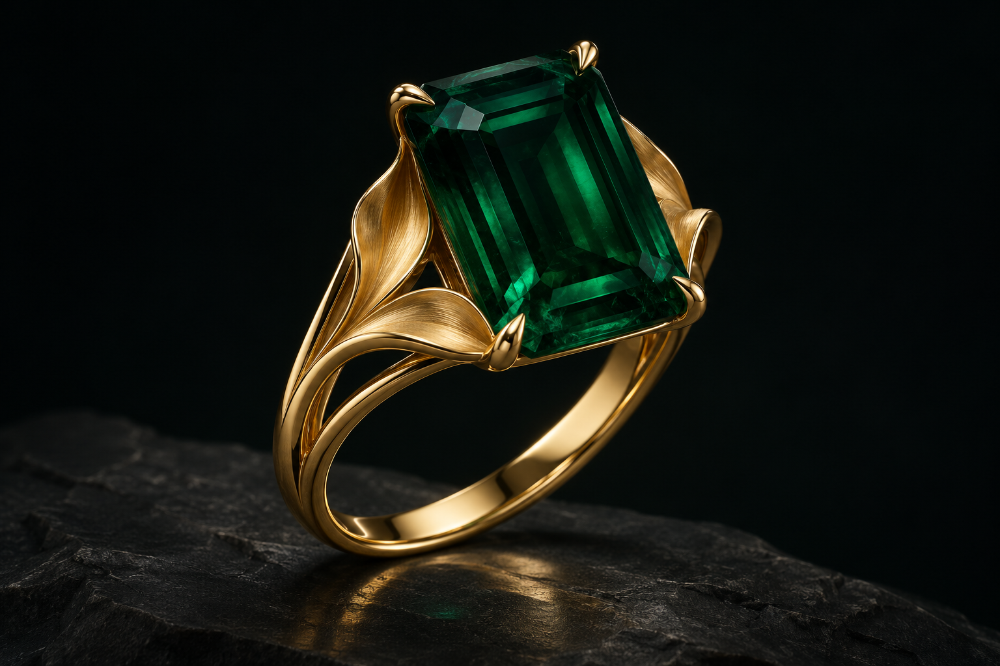
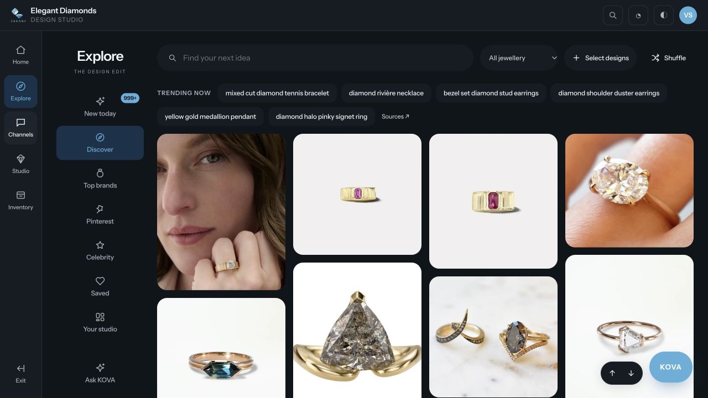

The design team.
Develop a collection. Compare revisions. Keep the decisions and details attached to the work.
Setting the scene.

JEWELRY INTELLIGENCE, REIMAGINED
Give it room to become something extraordinary.
Research, design, materials and storytelling.
Connected in Kova.
For the people
behind the piece.
Great jewelry begins long before the bench. A reference. A conversation. A detail worth keeping. Kova brings that context into one workspace, so your team can carry the original idea all the way through.
Drag to rotate. On touch screens, swipe horizontally to rotate and vertically to scroll. Arrow keys rotate; plus and minus zoom; Home resets the view. Use the buttons to switch between sketch and solid.
Explore the work behind the finished piece.
From the first saved reference to the next collection.
A detail worth carrying forward.
A sculpted shoulder.
A quiet strength.

Explore jewelry references, save the details that matter and bring their contributions into a project board.
Saved research and reference boards · recorded capabilityArchived development captures, October 2026. Sample contexts shown. Connection availability and technical qualification vary by workflow.
Your designers set the direction. Kova helps explore variations, refine a selected region and keep the original beside every new version.
Interactive visual study · design variations require technical review.Explore the design workspace ↗Bring dimensions, material declarations and stock requirements into the conversation. Prepare the design for native CAD, with evidence and human review at every meaningful step.
Explore materials & preparation ↗Native CAD is demonstrated in SDK prototypes. The integrated workflow and measured BOM adoption remain under qualification.Built around manufacturers and their design teams, with a path to traders and the studios they serve.
Preserve the folded petal shoulders.
ATTACHED TO THIS STUDYReferences. Variations. Decisions.
Develop a collection. Compare revisions. Keep the decisions and details attached to the work.
Bring the brief, material requirements and technical preparation into one project record.
Carry the story forward with reviewed assets and feedback linked to the exact design.
Jewelry manufacturers with in-house designers, and the trading relationships that connect them to jewelry studios. The workspace keeps creative and technical context together as a design moves between people.
Your team chooses the direction, judges the design and approves the next step. Kova supports research, concept exploration, scoped refinement and the organization of working context.
The development product includes research, saved boards, concept generation, image editing, BOM/pricing, marketing and review workflows. The walkthrough uses recorded development screens. Live connections and individual formats have separate availability and qualification requirements.
A concept image needs confirmed dimensions, suitable geometry and specialist review. Native Rhino SDK builds have been demonstrated; the complete integrated CAD journey and measured BOM adoption are still being qualified.
Open the Kova development workspace with the access provided to your team. Start with one supported jewelry family, a real brief and clear review criteria. The aim is to prove a connected workflow before expanding it.
Open the development workspace ↗THE NEXT EXTRAORDINARY PIECE